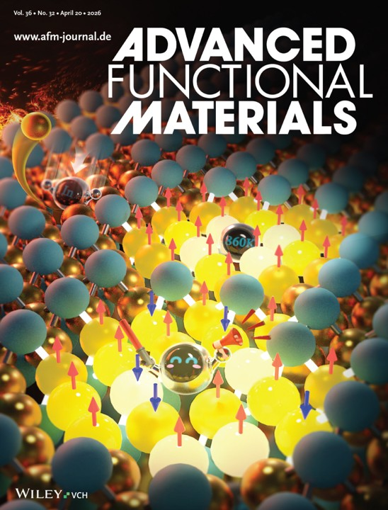
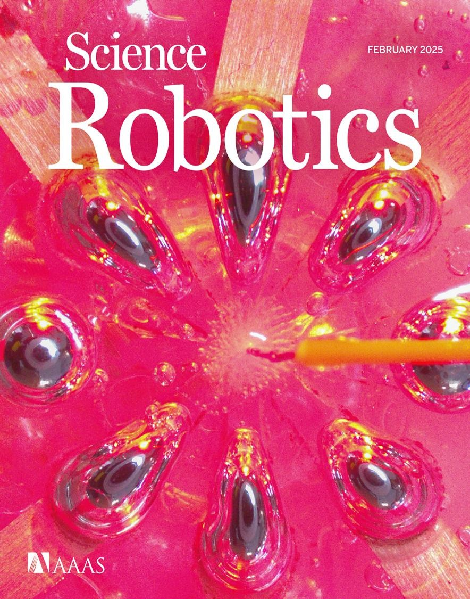
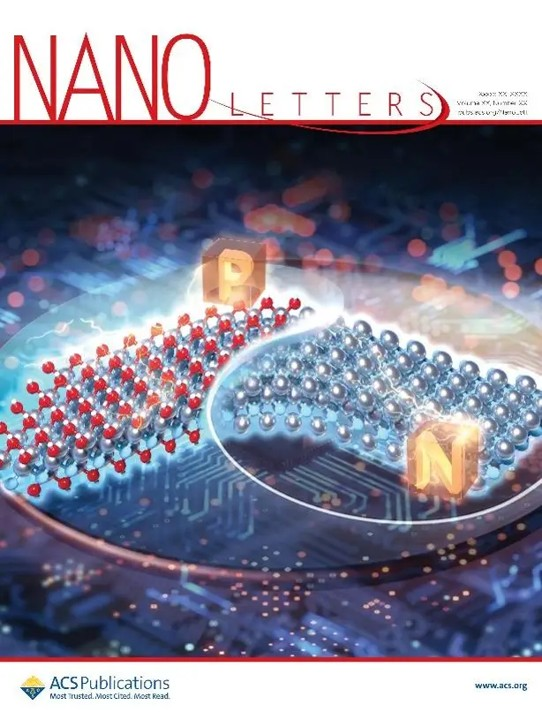
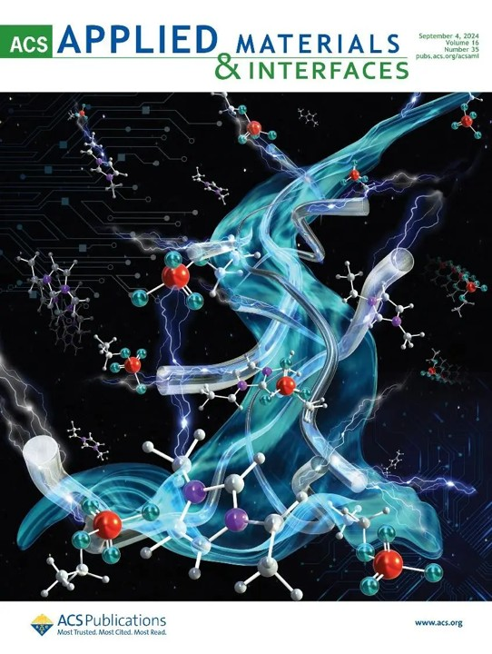

Advanced Functional Materials
2026 · Featured Cover
Life & Recognition
Highlights from our research, journal features, scientific outreach, and life beyond the laboratory.
Featured Work

2026 · Featured Cover

2026 · Featured Cover

2025 · Inside Cover

2024 · Front Cover
Beyond the Lab
Content placeholder · details to be added
Outreach photo to be added
Sharing materials science and bioelectronics with students and the broader community.
Content placeholder · details to be added
Outreach photo to be added
Connecting our research with students, educators, and the public.